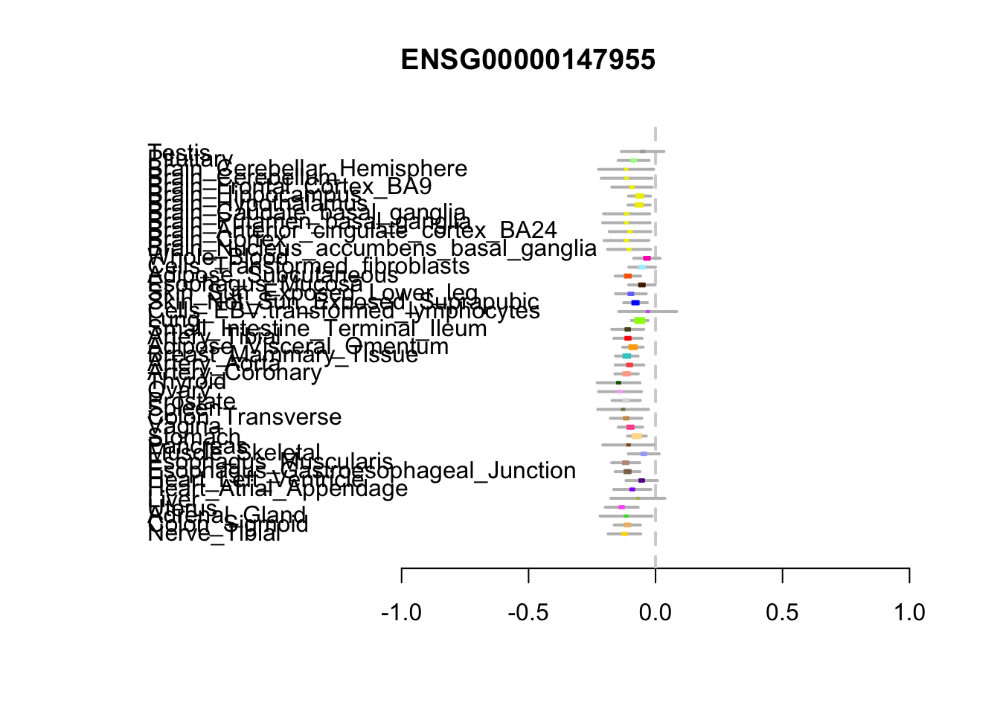
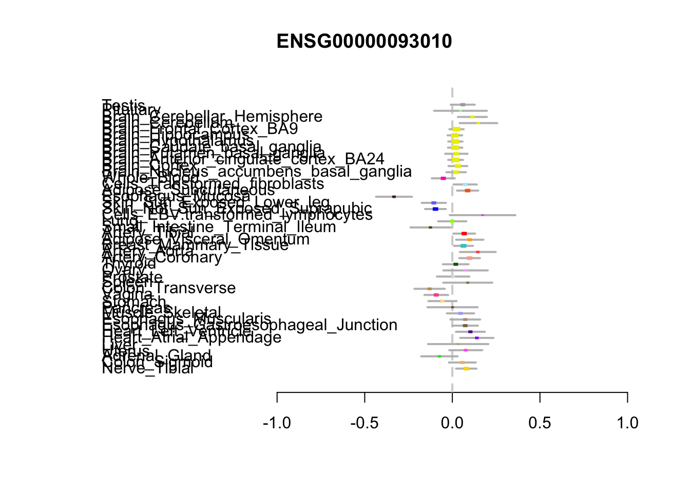
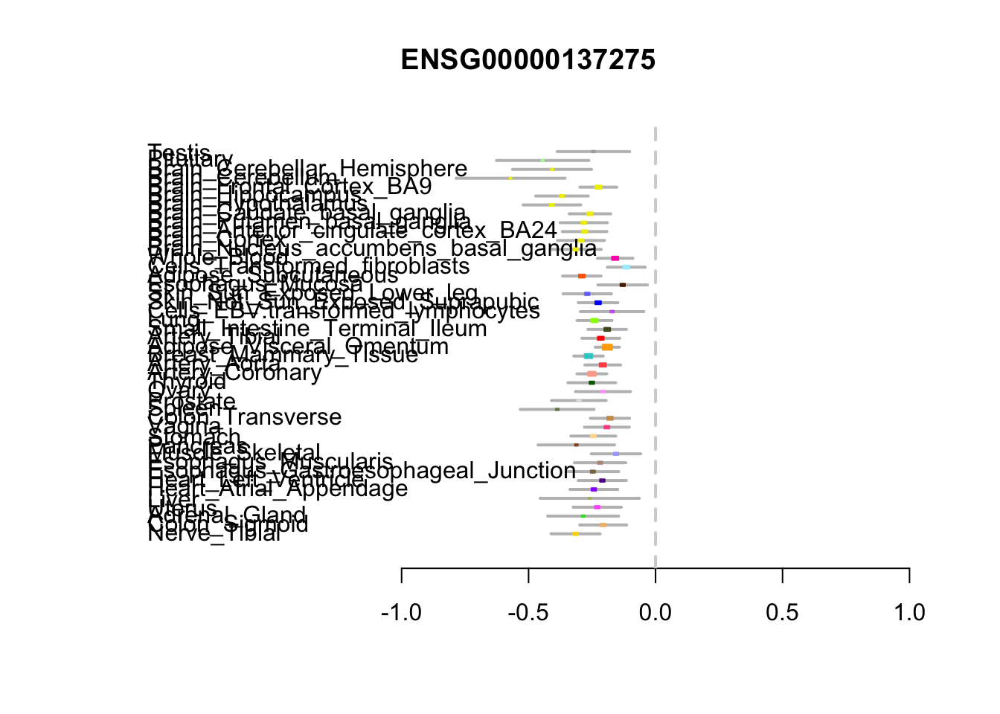
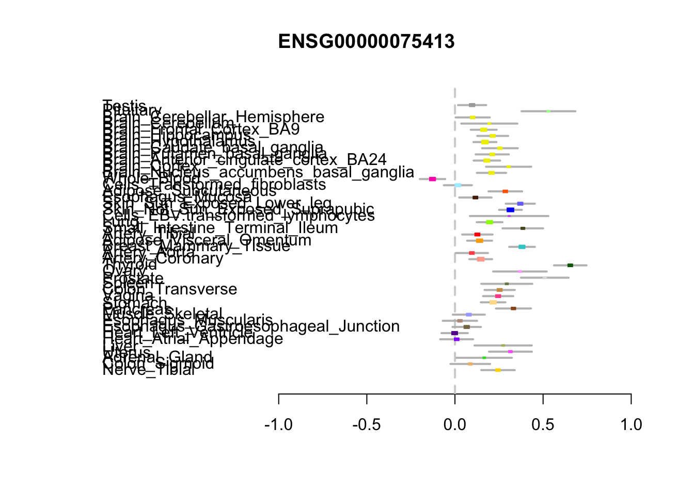
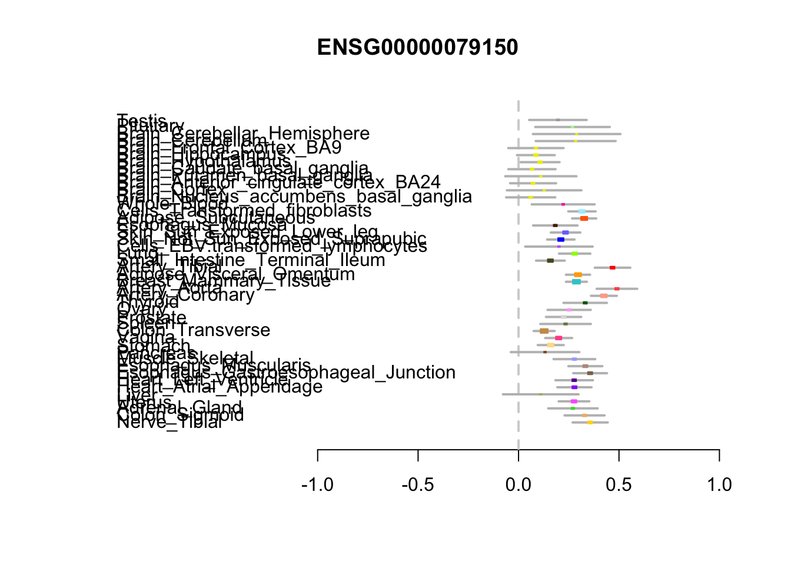
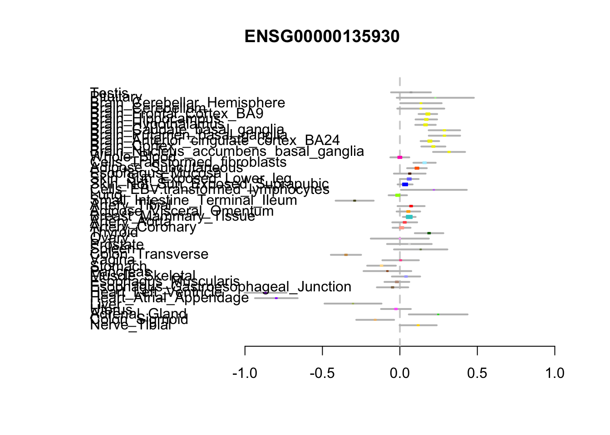
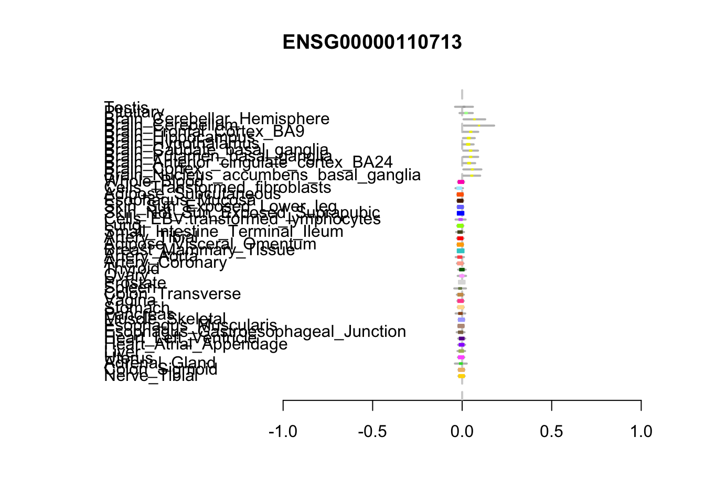

Last updated: 2020-04-11
Checks: 6 1
Knit directory: covid_mr/
This reproducible R Markdown analysis was created with workflowr (version 1.6.0). The Checks tab describes the reproducibility checks that were applied when the results were created. The Past versions tab lists the development history.
Great! Since the R Markdown file has been committed to the Git repository, you know the exact version of the code that produced these results.
Great job! The global environment was empty. Objects defined in the global environment can affect the analysis in your R Markdown file in unknown ways. For reproduciblity it’s best to always run the code in an empty environment.
The command set.seed(20200410) was run prior to running the code in the R Markdown file. Setting a seed ensures that any results that rely on randomness, e.g. subsampling or permutations, are reproducible.
Great job! Recording the operating system, R version, and package versions is critical for reproducibility.
Nice! There were no cached chunks for this analysis, so you can be confident that you successfully produced the results during this run.
Using absolute paths to the files within your workflowr project makes it difficult for you and others to run your code on a different machine. Change the absolute path(s) below to the suggested relative path(s) to make your code more reproducible.
| absolute | relative |
|---|---|
| ~/covid_mr/cand_eqtl.csv | cand_eqtl.csv |
Great! You are using Git for version control. Tracking code development and connecting the code version to the results is critical for reproducibility. The version displayed above was the version of the Git repository at the time these results were generated.
Note that you need to be careful to ensure that all relevant files for the analysis have been committed to Git prior to generating the results (you can use wflow_publish or wflow_git_commit). workflowr only checks the R Markdown file, but you know if there are other scripts or data files that it depends on. Below is the status of the Git repository when the results were generated:
Ignored files:
Ignored: .DS_Store
Untracked files:
Untracked: cand_eqtl.csv
Untracked: gene_snp_forgtex.txt
Note that any generated files, e.g. HTML, png, CSS, etc., are not included in this status report because it is ok for generated content to have uncommitted changes.
These are the previous versions of the R Markdown and HTML files. If you’ve configured a remote Git repository (see ?wflow_git_remote), click on the hyperlinks in the table below to view them.
| File | Version | Author | Date | Message |
|---|---|---|---|---|
| Rmd | c781e36 | Sarah Urbut | 2020-04-11 | wflow_publish(“analysis/eqtl.Rmd”) |
| html | 9a04eef | Sarah Urbut | 2020-04-11 | Build site. |
| Rmd | 94d231f | Sarah Urbut | 2020-04-11 | wflow_publish(“analysis/eqtl.Rmd”) |
In this file let’s look at our hits after interrogating the GTEx portal. The workflow was as followed.
We interrogated all the targets listed in this preprint for single tissue eQTLs in lung, using the GTEx portal above. This identified 1150 gene-SNP pairs and 17 unique genes.
library(rmeta)
file=read.csv("~/covid_mr/cand_eqtl.csv",header=TRUE)
##There are this many genes
length(unique(file$Gencode.Id))[1] 17file$P.Value=as.numeric(as.character(file$P.Value))
sum(file$P.Value<5e-8)[1] 249Of these 1150 associations, there were 249 gene-SNP pairs satisfying an eQTL univariate frequentist p-value threshold of 5e-8. This represented 10 unique genes.
##Here are the significant Ps
goodguys=file[file$P.Value<5e-8,]
##Representing this many genes
length(unique(goodguys$Gene.Symbol))[1] 10##Here they are:
unique(goodguys$Gene.Symbol) [1] SIGMAR1 COMT NDUFA1 RIPK1 GLA MARK3 F2RL1 FKBP7 EIF4E2
[10] NUP98
17 Levels: BRD2 CEP250 COMT CSNK2A2 EIF4E2 F2RL1 FKBP10 FKBP7 GLA ... TBK1We then sought to interrogate the joint analysis of this dataset for eQTL which could be shared across tissues for multi tissue involvement. Of those 10 genes, 7 were also interrogated by GTEx 7. This analysis chose the max SNP per gene, so this may not have been the SNP which was significant in lung, and the large caveat there is that we assume one ‘true’ eQTL per gene.
## we can convert for the old gtex analysis
u=as.character(unique(goodguys$Gencode.Id))
s=sapply(u,function(x){strsplit(x =x,split = "[.]")[[1]][1]})
candidates=c("ENSG00000147955.12_9_34562590_C_G_b37","ENSG00000093010.7_22_19950763_T_G_b37","ENSG00000137275.9_6_3086007_C_T_b37","ENSG00000075413.13_14_103880750_C_G_b37","ENSG00000079150.13_2_179290692_A_G_b37","ENSG00000135930.9_2_233426526_C_T_b37","ENSG00000110713.11_11_2886906_A_G_b37")We then plotted the metaplot across all tissues.
Here we make metaplots of all the genes who have an eQTL in lung from the portal that has a pvalue < 5e-8, and are found in the list of genes from the old GTEx evaluation (n=7)

[[1]]
NULL
[[2]]
NULL
[[3]]
NULL
[[4]]
NULL
[[5]]
NULL
[[6]]
NULL
[[7]]
NULL
sessionInfo()R version 3.5.2 (2018-12-20)
Platform: x86_64-apple-darwin15.6.0 (64-bit)
Running under: macOS 10.15.4
Matrix products: default
BLAS: /Library/Frameworks/R.framework/Versions/3.5/Resources/lib/libRblas.0.dylib
LAPACK: /Library/Frameworks/R.framework/Versions/3.5/Resources/lib/libRlapack.dylib
locale:
[1] en_US.UTF-8/en_US.UTF-8/en_US.UTF-8/C/en_US.UTF-8/en_US.UTF-8
attached base packages:
[1] stats graphics grDevices utils datasets methods base
other attached packages:
[1] rmeta_3.0 workflowr_1.6.0
loaded via a namespace (and not attached):
[1] Rcpp_1.0.3 rprojroot_1.3-2 digest_0.6.23 later_1.0.0
[5] grid_3.5.2 R6_2.4.1 backports_1.1.5 git2r_0.26.1
[9] magrittr_1.5 evaluate_0.14 highr_0.8 stringi_1.4.5
[13] rlang_0.4.4 fs_1.3.1 promises_1.1.0 whisker_0.4
[17] rmarkdown_2.1 tools_3.5.2 stringr_1.4.0 glue_1.3.1
[21] httpuv_1.5.2 xfun_0.12 yaml_2.2.1 compiler_3.5.2
[25] htmltools_0.4.0 knitr_1.28